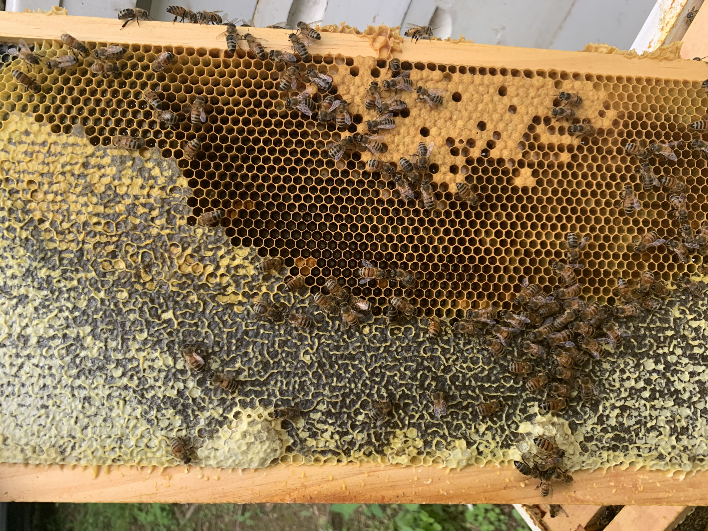

Honey bees living in a tree
Steady traffic in and out of a knothole or a split in the trunk means there's a colony inside the tree — comb, honey, brood, the whole household. That's different from a swarm hanging on a branch, and it usually calls for a different answer. Often the honest answer is leave them. Here's how to work out which situation you're in.
A colony, and probably an old one
Hollow trees are where honey bees lived long before anyone gave them boxes. A cavity in an old maple, oak, or silver maple with a knothole entrance a few feet up is close to ideal as far as they're concerned: dry, defensible, and insulated.
If you're seeing consistent two-way traffic through one opening — bees leaving empty and returning with lumps of pollen on their legs — that colony is established. It didn't arrive last night. Most tree colonies we're called about have been there at least since the previous spring, and plenty are much older than that.
Which is worth saying plainly: if they've been there for years and nobody noticed, that's an argument for leaving them.

When to leave them alone
We're beekeepers. We'd happily take every colony in Dauphin County. But a healthy wild colony in a tree is genuinely a good thing to have on your property, and moving it is stressful for the bees and expensive for you. Leave them if:
- The entrance is away from the traffic of your life. Not over a doorway, a path, a patio, a swing set, or where you park.
- The tree is healthy and staying. No reason to open up a sound trunk.
- Nobody in the household is sting-allergic. This one overrides everything else.
- They're simply flying about their business. Bees crossing your yard at height on their way to forage are not a problem to be solved. They pollinate everything within a couple of miles, including your garden and your neighbours'.
We will tell you this on the phone rather than come out and sell you a removal. It's the same call we make on harmless ground-nesting bees.
When it does need dealing with
- The tree is coming down. This is the big one — call before the tree crew is booked, not after. See below.
- Someone is allergic. A sting-allergic person in the household changes the calculation entirely and we treat it as urgent.
- The entrance is at head height on a path. Bees defend the area right at the entrance. A knothole at chest height beside the walk to your front door is a genuine conflict.
- The tree is dead, hollow, and near the house. Now you have two problems, and they need solving in the right order.
- Storm damage has opened the cavity up. A split trunk with exposed comb is a different situation and worth a look. There's more on storm-damaged colonies.
If the tree is being cut down
This is the scenario where we most want the phone to ring, and where it most often doesn't until it's too late. Cutting into an occupied cavity with a chainsaw is dangerous for the crew, fatal for most of the colony, and makes a mess of everyone's afternoon. It also wastes a colony that could have been saved.
Handled properly, a tree removal is the best possible version of this job. We coordinate with your tree service, the section containing the cavity comes down under control, and the colony can be opened up, cut out, and rehomed into a box the same day. Tree crews around Harrisburg who've done this with us once tend to call us the next time.
Give us as much notice as you can. Spring and early summer are much kinder to the colony than late autumn.
The three ways this can go
- Leave them. Free, and frequently the right answer. We'll say so.
- Trap-out. For a living tree that's staying put. A one-way cone over the entrance lets bees out but not back in, and a bait hive beside it gives them somewhere to go — over several weeks the colony relocates itself. It's slow, it needs return visits, and it does not recover the comb and honey inside the trunk, which is left behind and may attract a future swarm. Honest about the limits: this is the compromise option, not the perfect one.
- Cut-out. Full removal of comb, brood, and bees from the cavity — realistic when the tree is being felled or a section is already open. The colony goes into a hive box and on to one of our apiaries, and it's the only method that gets everything out.
Structural removals of this kind are quoted on the situation. For reference, most live honey bee removals in Central PA run $500 to $1,000+, with simple work at the low end and difficult access at the high end. A tree that's already being felled is usually toward the easier end. See live bee removal for the full picture.
Common questions
How do I know it's honey bees and not wasps in there?
Honey bees are fuzzy and amber-brown and carry pollen on their legs; yellow jackets are shiny with hard-edged yellow and black and never carry pollen. Wasps also nest in cavities, so the location alone won't tell you. The full rundown is on honey bees or yellow jackets — or just text us a photo.
Can you just plug the hole?
Please don't, and we won't. Sealing an active colony in kills tens of thousands of bees and leaves pounds of honey and wax to ferment inside the trunk. If the tree is anywhere near the house, that mess eventually finds its way somewhere you'd rather it didn't — and it attracts everything else.
Will they swarm into my house next?
A colony in a tree will throw swarms in spring, like any healthy colony. Those swarms go looking for cavities, and sometimes they choose a soffit or a wall — yours or a neighbour's. It's a fair reason to have our number handy in May, though it isn't in itself a reason to remove a tree colony. If one does move into a structure, see bees in walls or bees in a soffit and call quickly; a colony that just moved in is far easier to remove.
The tree is hollow and I think it's unsafe. What order do things happen in?
Get the tree assessed for the structural question first, then loop us in before any cutting is scheduled. If it's coming down, we coordinate with the crew on the day. If it's staying, we can talk about a trap-out. Either way, don't let anyone start cutting without knowing the bees are there.
They're 30 feet up. Does that change things?
It changes access, cost, and sometimes feasibility. Height is one of the main reasons a removal comes in at the higher end, and occasionally the sensible answer at that height is to leave them alone — a colony 30 feet up is rarely bothering anybody. Send a photo and tell us roughly how high, and we'll give you a straight answer.
Bees in a tree on your property?
Text a photo with your town and roughly how high the entrance is. We'll tell you honestly whether it's worth doing anything — and if the tree is scheduled to come down, call us before the crew does. Serving Harrisburg, Hershey, Camp Hill, Mechanicsburg, Carlisle, and Central PA.
Call or Text 717-379-3248